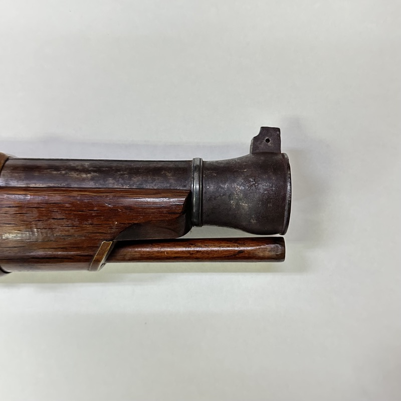

【 日程限定特別イベント 】
武具の魅力
本物を見て、受け継がれた物語を聴く。
甲冑、火縄銃、日本刀、槍、弓。
本物の武具を間近で見て、その来歴と物語を聴く一日限定イベント。
展示観覧
11:00～16:00 無料・予約不要
トークセッション
13:00～14:30 有料・事前申込制・限定50席
2026年11月23日（月・祝）勤労感謝の日
掛川城公園 竹の丸 （静岡県掛川市）
 甲冑
甲冑

火縄銃 日本刀
日本刀